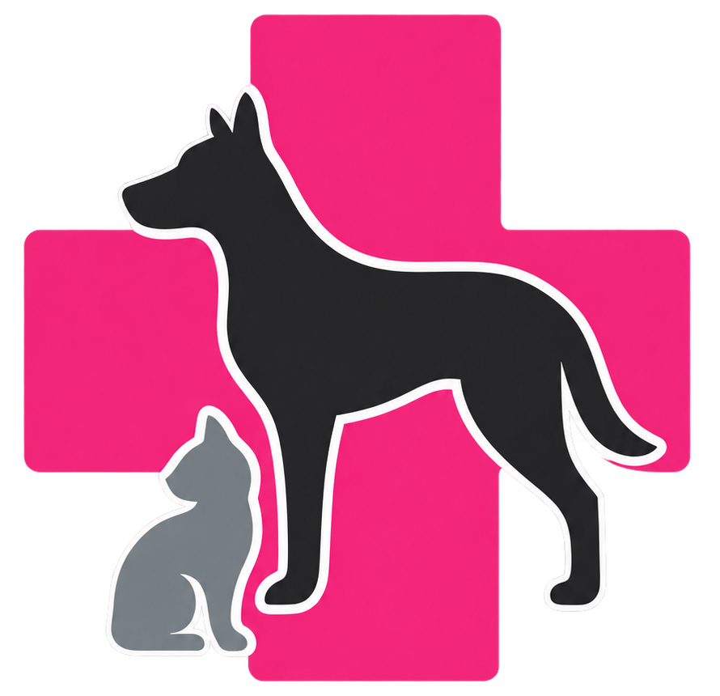

Side by side
Original, then coarse to fine
All four rendered at the same size, so the only variable is how many cells the silhouette gets to spend.

The reference. Continuous edges, full detail in the ears, tail and paws.
Reads as an emblem. The dog keeps its stance; the ears and tail become suggestions.
The balance point. Legs separate cleanly and the cat holds its own shape beside the dog.
Nearly the original silhouette. At small sizes the cells stop reading as cells.
The real test
How each one holds up at working size
A mark has to survive the favicon. Below, each grid rendered at the sizes it would actually be used at.
Coarse — 23 × 27
Use it where the mark is small and alone: favicon, app icon, a stamp on paperwork. The honeycomb is unmistakable because each cell is large enough to be a shape rather than a dot.
Medium — 35 × 41
The hero mark. Large enough that the dog's legs and the cat's ears survive, coarse enough that it still reads as built from cells rather than printed.
Fine — 53 × 62
For large formats — a wall, a vehicle, a full-bleed header. Below about 160px the cells disappear and you may as well use the original artwork.